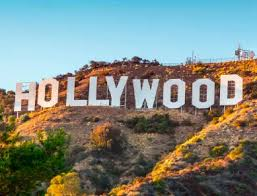
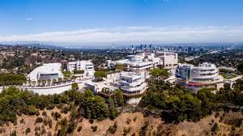

Top Attractions

Hollywood Sign
Visit the iconic symbol of the entertainment industry.

Santa Monica Pier
Enjoy the beach, rides, and beautiful sunsets.

Getty Center
Discover world-class art and stunning architecture.
Griffith Observatory
Gaze at the stars with family or friends.